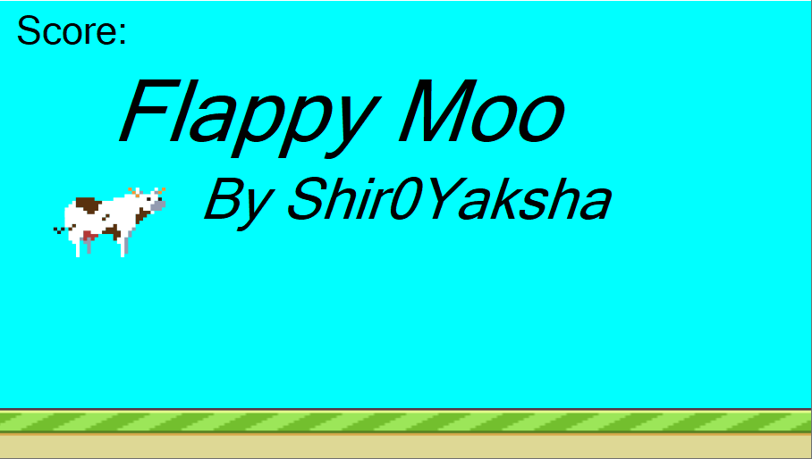
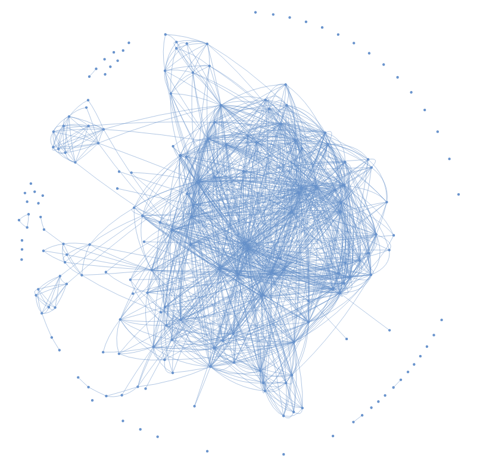
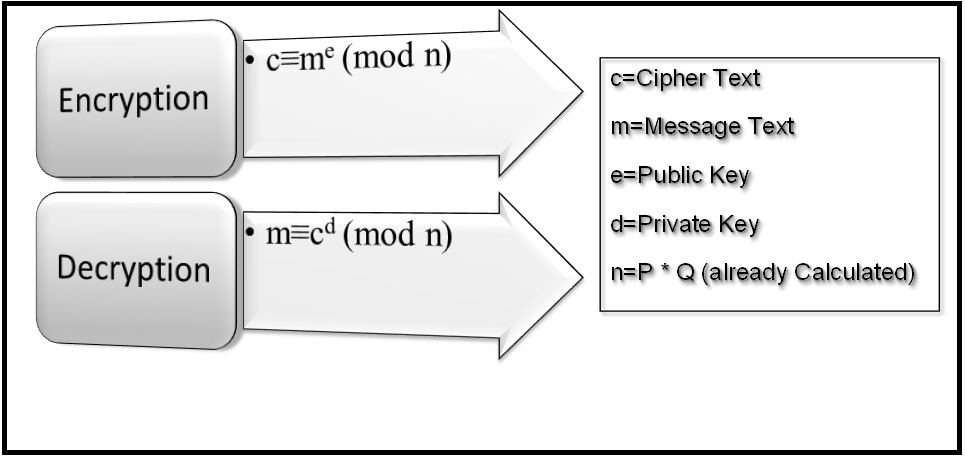
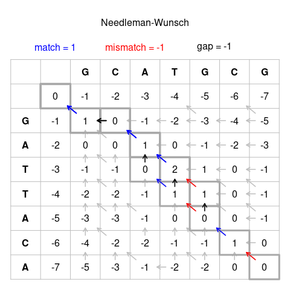

User-Interface for Virtual Reality-Based Human Swarm Interaction
Hi!
I'm Akshat
-------------------------------
I am a final year BS-MS(Dual Degree) student at the
Indian Institue of Science Education and Research(IISER) Bhopal,
in the department of Electrical Engineering and
Computer Science (EECS).
My Masters thesis focuses on Swarm Robotics and Virtual/Mixed
Reality, exploring the interaction between humans and robots
under the guidance of Prof. Sujit PB in the MOON lab at IISER Bhopal.
Beyond academics, I am passionate about new technologies and
strive to learn about any new piece of technology I encounter.
I enjoy anime, movies, and video games, with a passion for
speedrunning, where I hold world records in a few games.
I also like reading and traveling, which broaden my perspectives.
In my free time, I work on small coding projects to
enhance my skills.
-------------------------------
Here are some of the projects I am currently working or have worked on -
Final Year Project(ECS412). This project involves developing interfaces to facilitate collaboration between robotics swarms and humans in the Virtual Reality domain.

SmolTAS
A mod for the game Smol Ame that helps with tool-assisted speedruns. It allows users to write inputs on a .txt file, control game speed, pause/resume at any point, and save/load player position and timing.

Flappy Moo
A Flappy Bird clone with various changes. Created from scratch using WinForms in C#.

Pokemon Fight Predictor
A machine learning model for predicting the winner of Pokemon Fights, completed as part of the semester project for the course Data Science and Machine Learning (ECS308)
MathsLib
A hobby project to create a C# library that contains various Mathematical Functions.

Indian Stock Market Network
Semester Project for the course Network Science: Theory and Applications(ECS414). This project involved collecting and processing the stock market data of top 200 Indian stocks, finding their correlation, creating a network based on the correlations and finding various features of the network like edge density, centrality etc.

RSA Encryption and Decryption
A hobby project created while doing the Modern Cryptography course (ECS610), which implements the vanilla RSA encryption and decryption scheme.

Breast Cancer Classification
Semester Project for the course Data Science in Practice (DSE315). This project involved using the Breast Cancer Wisconsin data and classifying cases as benign or malignant.
Smol Ame Mod Installer(SAMI)
A mod installer for Smol Ame game that fetches all available mods on Github and lets users install selected mods locally. Made using WinForms.

Bioinformatics Algorithms
A hobby project created while auditing the Bioinformatics course (BIO402), which implements the plot of dot matrix alignment of two sequences and the global sequence alignment of two sequences using the Needleman–Wunsch algorithm
BioStatistics
Semester Project for the course Biostatistics(BIO407). This project involved using data from various cell lines involving HIV-1 nef, a protein important for the development of AIDS, and performing statistical studies on it.

Convex Hull Algorithms
Implementation of the Graham's Scan and Jarvis March algorithms learnt while working with Dr. Sujoy Bhore